Description: The Jaguar Cichlid is a bold and aggressive freshwater fish known for its striking, jaguar-like spots and vibrant colors. It requires a large tank with plenty of space, hiding spots, and stable water conditions. Due to its territorial nature, it is best kept with other robust species.
pH: Ideal pH range is 6.5 to 7.5, with slightly acidic to neutral water.
Size: Can grow up to 14 inches (35 cm) in length.
Lifespan: Typically lives 10 to 15 years with proper care.
Alligator Gar 6-7"
Price: ₹850.00
Description: The Alligator Gar is a large, predatory fish known for its elongated body and alligator-like snout. It requires a very large tank with ample swimming space and secure water conditions. Due to its size and predatory nature, it is best kept in species-only tanks or with very robust tank mates.
pH: Ideal pH range is 6.5 to 7.5, with slightly acidic to neutral water.
Size: Can grow up to 10 feet (3 meters) in length.
Lifespan: Typically lives 35 to 50 years with proper care.
Buttekofferi 10"
Price: ₹850.00
Description: The Buttekofferi is a peaceful and hardy freshwater cichlid known for its beautiful coloration, with shades of blue and orange. It thrives in well-maintained aquariums with plenty of hiding spots and a stable environment.
pH: Ideal pH range is 6.5 to 7.5, with slightly acidic to neutral water.
Size: Can grow up to 6 to 8 inches (15 to 20 cm) in length
Lifespan: Typically lives 8 to 12 years with proper care.
Florida Gar 14"
Price: ₹2,000.00
Description: The Florida Gar is a long, predatory fish known for its sleek body and sharp, elongated snout. It is an active swimmer that requires a large aquarium with plenty of swimming space and secure tank conditions.
pH: Ideal pH range is 6.5 to 7.5, with slightly acidic to neutral water.
Size: Can grow up to 36 inches (90 cm) in length.
Lifespan: Typically lives 10 to 20 years with proper care.
African Lungfish 1.5 feet
Price: ₹6,500.00
Description: The African Lungfish is a unique, prehistoric fish known for its ability to breathe air and its eel-like body. It requires a large tank with low water levels and plenty of hiding spaces, as it is a solitary and slow-moving species.
pH: Ideal pH range is 6.5 to 7.5, with slightly acidic to neutral water.
Size: Can grow up to 6 feet (180 cm) in length.
Lifespan: Typically lives 15 to 20 years with proper care.
Tiger Oscar 10-11"
Price: ₹1,200.00
Description: The Tiger Oscar is a popular and aggressive freshwater fish known for its striking black and orange striped pattern. It requires a large tank with plenty of space, hiding spots, and stable water conditions. Due to its territorial nature, it thrives in tanks with few or no tank mates.
pH: Ideal pH range is 6.0 to 7.5, with slightly acidic to neutral water.
Size: Can grow up to 14 inches (35 cm) in length.
Lifespan: Typically lives 10 to 15 years with proper care.
Red Snook Splendida
Price: ₹800.00
Description: The Redsnook Splendida is a striking and predatory freshwater fish known for its vibrant colors and sleek body. It requires a large, well-maintained aquarium with plenty of space to swim.
pH: Ideal pH range is 6.0 to 7.5, with slightly acidic to neutral water.
Size: Can grow up to 24 inches (60 cm) in length.
Copper Oscar 10-11"
Price: ₹1,500.00
Description: The Copper Oscar is a beautiful and aggressive freshwater fish known for its copper-toned body and striking markings. It requires a large tank with ample space and hiding spots due to its territorial nature.
pH: Ideal pH range is 6.0 to 7.5, with slightly acidic to neutral water.
Size: Can grow up to 14 inches (35 cm) in length.
Lifespan: Typically lives 10 to 15 years with proper care.
Albino Tiger Oscar 10-11"
Price: ₹1,500.00
Description: The Albino Tiger Oscar is a striking freshwater fish with vibrant orange and white markings. Known for its intelligent and territorial nature, it requires a large tank with plenty of space and hiding spots. It is an aggressive species that thrives with careful tank management.
pH: Ideal pH range is 6.0 to 7.5, with slightly acidic to neutral water.
Size: Can grow up to 14 inches (35 cm) in length.
Lifespan: Typically lives 10 to 15 years with proper care.
Albino Tiger Oscar 8"
Price: ₹1,200.00
Description: The Albino Tiger Oscar is a stunning freshwater fish featuring vibrant orange and white markings. Renowned for its intelligent and territorial behavior, it requires a spacious tank with ample space and hiding spots. This aggressive species thrives with careful tank management.
pH: Ideal pH range is 6.0 to 7.5, with slightly acidic to neutral water. Size: Can grow up to 14 inches (35 cm) in length. Lifespan: Typically lives 10 to 15 years with proper care.
Mango Oscar 8"
Price: ₹1,200.00
Description: The Mango Oscar is a visually striking freshwater fish known for its vibrant yellow and orange coloration, accented with dark markings. This intelligent and territorial species requires a spacious tank equipped with plenty of hiding spots and shelter. The Mango Oscar is known for its lively personality and interaction with its environment.
pH: Ideal pH range is 6.0 to 7.5, with slightly acidic to neutral water. Size: Can grow up to 14 inches (35 cm) in length. Lifespan: Typically lives 10 to 15 years with proper care.
Red Tail Catfish 5"
Price: ₹500.00
Description: The Red Tail Catfish is a striking freshwater fish, known for its iconic red-orange tail and robust body. This fish is an active swimmer that needs a spacious aquarium equipped with adequate filtration due to its size and bio-load. As it grows, it can reach impressive lengths, making it suitable for experienced aquarists.
pH: Ideal pH range is 6.0 to 7.5. Size: Can grow up to 3 feet (90 cm) in captivity. Lifespan: Lives around 15 years with proper care.
Armoured Sea Catfish 5"
Price: ₹1,650.00
Description: The Armoured Sea Catfish is notable for its unique armored body, giving it a distinct appearance in the aquarium. This peaceful fish thrives in groups and prefers hiding spots. Suitable for community tanks, it brings a unique look and behavior to aquarium settings. Make sure to provide a sandy substrate and plenty of decor.
pH: Ideal pH range is 6.5 to 7.5. Size: Generally grows up to 12 inches (30 cm) as adults. Lifespan: Can live around 10 years or more with appropriate care.
Marble Lancer 5-6"
Price: ₹800.00
Description: The Marble Lancer is an elegant freshwater fish noted for its beautiful marbled pattern. This lively species adds color and movement to aquariums and is relatively easy to care for. They are best kept in small groups and appreciate a tank with plenty of plants and hiding spots.
pH: Ideal pH range is 6.0 to 7.5. Size: Typically reaches 8 to 10 inches (20 to 25 cm) when fully grown. Lifespan: Generally lives between 5 to 7 years with proper care.
Flame Red Oscar 10-11"
Price: ₹1,500.00
Description: The Flame Red Oscar is a vibrant freshwater fish with brilliant red-orange coloration and distinctive black markings. Known for its aggressive and territorial behavior, it requires a large tank with ample space and hiding spots. It is an intelligent and active species, often interacting with its environment.
pH: Ideal pH range is 6.0 to 7.5, with slightly acidic to neutral water.
Size: Can grow up to 14 inches (35 cm) in length.
Lifespan: Typically lives 10 to 15 years with proper care.
Red Copper Oscar 8"
Price: ₹1,200.00
Description: The Red Copper Oscar is a striking freshwater fish known for its rich red and copper hues combined with unique black markings. This species is recognized for its aggressive and territorial behavior, requiring a large tank with plenty of space and hiding spots. Highly intelligent and active, Red Copper Oscars often engage with their environment and their keepers.
pH: Ideal pH range is 6.0 to 7.5, with slightly acidic to neutral water. Size: Can grow up to 14 inches (35 cm) in length. Lifespan: Typically lives 10 to 15 years with proper care.
Yellow Flagtail 7-8"
Price: ₹2,000.00
Description: A vibrant freshwater species known for its striking yellow tail and elongated body. It is an active and peaceful fish that requires a spacious tank with plenty of swimming space.
pH: Ideal pH range is 6.5 to 7.5, with slightly acidic to neutral water.
Size: Can grow up to 10 inches (25 cm) in length.
Ornate Senegal 3-4"
Price: ₹1,500.00
Description: The Ornate Bichir is a prehistoric-looking fish with an elongated body and armored scales. It is a nocturnal and peaceful species that requires a spacious tank with plenty of hiding places.
pH: Ideal pH range is 6.5 to 7.5, with slightly acidic to neutral water.
Size: Can grow up to 20 inches (50 cm) in length.
Peacock Bass Azul 4-5"
Price: ₹1,000.00
Description: The Azul Peacock Bass is a vibrant and aggressive freshwater fish known for its striking blue and yellow coloration. It thrives in a spacious aquarium with clean, well-filtered water. The ideal pH range is 6.0 to 7.5, with slightly acidic to neutral water conditions for optimal health and growth.
Size: This fish can grow up to 24 inches (60 cm) in length.
Imported Peacock Bass Azul 10-12"
Price: ₹6,000.00
Description: The Azul Peacock Bass is a vibrant and aggressive freshwater fish known for its striking blue and yellow coloration. It thrives in a spacious aquarium with clean, well-filtered water. The ideal pH range is 6.0 to 7.5, with slightly acidic to neutral water conditions for optimal health and growth.
Size: This fish can grow up to 24 inches (60 cm) in length.
Golden Kelberi Peacock Bass 6"
Price: ₹1,000.00
Description: The Golden Kelberi Peacock Bass is a stunning freshwater fish with vibrant golden-yellow hues and distinctive black markings. Known for its active and aggressive nature, it requires a large, well-maintained aquarium. The ideal pH range is 6.0 to 7.5, with slightly acidic to neutral water for optimal health and vitality.
Size: It can grow up to 24 inches (60 cm) in length.
Golden Kelberi Peacock Bass 8"
Price: ₹1,200.00
Description: The Golden Kelberi Peacock Bass is a stunning freshwater fish with vibrant golden-yellow hues and distinctive black markings. Known for its active and aggressive nature, it requires a large, well-maintained aquarium. The ideal pH range is 6.0 to 7.5, with slightly acidic to neutral water for optimal health and vitality.
Size: It can grow up to 24 inches (60 cm) in length.
Albino Red-Bellied Pacu 7"
Price: ₹800.00
Description: The Albino Red-Bellied Pacu is a peaceful freshwater fish with a striking pale body and vibrant red belly. It requires a spacious, well-maintained aquarium due to its large size and active nature.
pH: Ideal pH range is 6.0 to 7.5, with slightly acidic to neutral water.
Size: Can grow up to 30 inches (76 cm) in length.
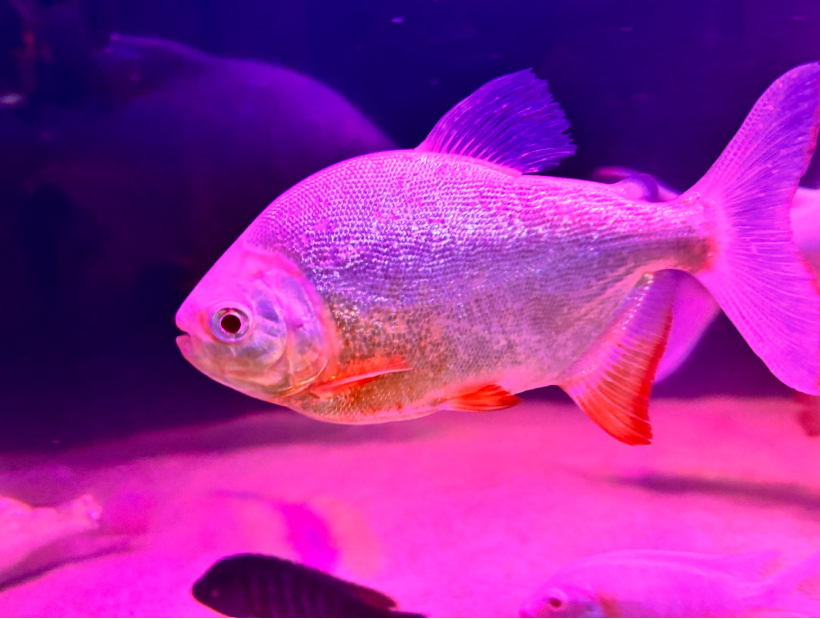
Albino Pacu 7-8"
Price: ₹700.00
Description: The Albino Pacu is a peaceful freshwater fish with a striking pale body. It requires a spacious, well-maintained aquarium due to its large size and active nature.
pH: Ideal pH range is 6.0 to 7.5, with slightly acidic to neutral water.
Size: Can grow up to 30 inches (76 cm) in length, currently available size is 7-8 inches (18-20 cm).
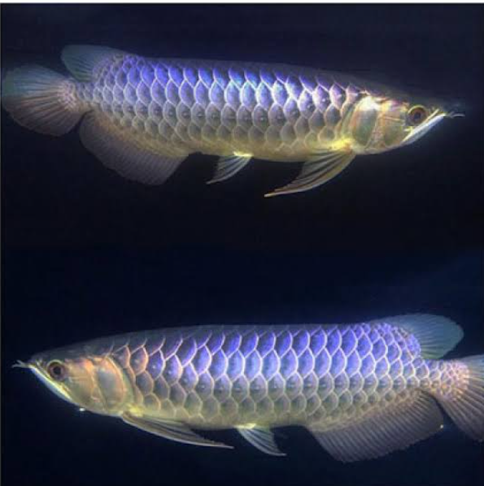
F2 Blue Base Arowana 6-7"
Price: ₹14,000.00
Description: The F2 Blue Base Arowana is an elegant freshwater fish known for its stunning blue sheen and streamlined body. It requires a spacious, well-maintained aquarium to accommodate its potential for growth and active behavior.
pH: Ideal pH range is 6.5 to 7.5, with slightly acidic to neutral water. Size: Typically grows to around 24 inches (61 cm) in length, but can reach up to 36 inches (91 cm) in optimal conditions. Initially, it reaches about 6 to 7 inches (15 to 18 cm) during its early growth stages.
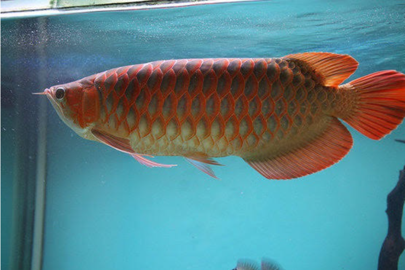
Red Tail Golden Arowana (Qian Hu) 8-9"
Price: ₹11,000.00
Description: The Red Tail Golden Arowana from Qian Hu is a stunning freshwater fish admired for its vibrant golden scales and striking red tail. This fish requires a spacious, well-maintained aquarium to support its growth and active swimming behavior.
pH: Ideal pH range is 6.5 to 7.5, with slightly acidic to neutral water. Size: Typically grows to around 24 inches (61 cm) in length, but can reach up to 36 inches (91 cm) under optimal conditions. Initially, it reaches about 6 to 7 inches (15 to 18 cm) during its early growth stages.
Albino Arowana 7+
Price: ₹2,500.00
Description: The Albino Arowana is a breathtaking freshwater fish known for its striking white body and delicate pinkish hues. This fish requires a spacious, well-maintained aquarium to accommodate its growth and active swimming habits.
pH: Ideal pH range is 6.5 to 7.5, with slightly acidic to neutral water. Size: Typically grows to around 24 inches (61 cm) in length, but can reach up to 36 inches (91 cm) in optimal conditions. Initially, it reaches about 6 to 7 inches (15 to 18 cm) during its early growth stages.
Channa Limbata 6"
Price: ₹800.00
Description: The Channa Limbata, also known as the Snakehead, is a freshwater fish known for its elongated body and aggressive behavior. It thrives in various aquatic environments.
pH: Ideal pH range is 6.0 to 7.5.
Size: Currently available size is 6 inches (15 cm).
Caspian Barble 6-7"
Price: ₹1,200.00
Description: The Caspian Barble is a lively and colorful freshwater fish that is known for its social behavior and ability to thrive in schools.
pH: Ideal pH range is 6.5 to 7.5.
Size: Currently available size is 6-7 inches (15-18 cm).
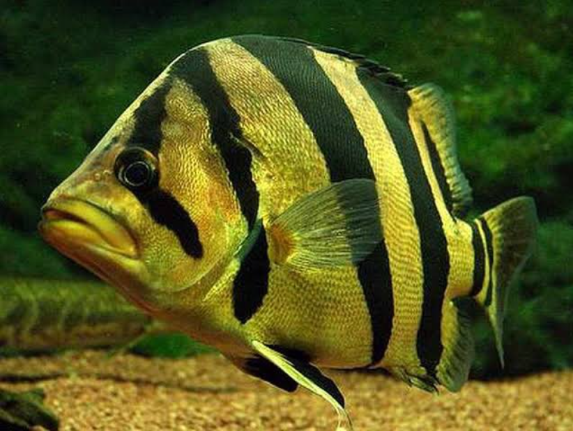
Siam Tiger 6-7"
Price: ₹1,800.00
Description: The Siam Tiger is a striking freshwater fish recognized for its beautiful stripes and active nature. It is best kept in a spacious aquarium.
pH: Ideal pH range is 6.0 to 7.5.
Size: Currently available size is 6-7 inches (15-18 cm).
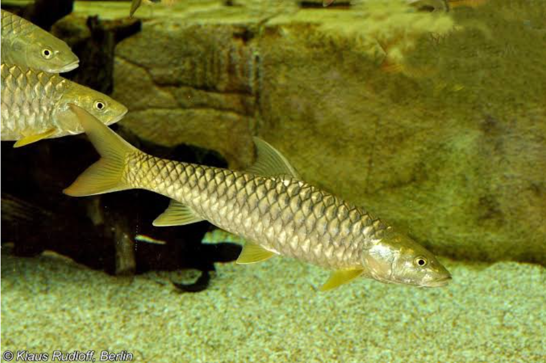
Golden Mahaseer 4"
Price: ₹450.00
Description: The Golden Mahaseer is a freshwater fish with a splendid golden hue. It is known for its robustness and adaptability to different water conditions.
pH: Ideal pH range is 6.5 to 7.5.
Size: Currently available size is 4 inches (10 cm).
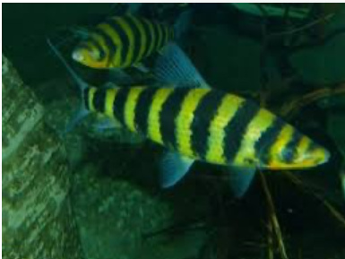
Banded Lepronius 6"
Price: ₹800.00
Description: The Banded Lepronius is a unique freshwater fish known for its striking bands and peaceful demeanor, making it an excellent choice for community tanks.
pH: Ideal pH range is 6.0 to 7.5.
Size: Currently available size is 6 inches (15 cm).
Green Arowana 5-6"
Price: ₹3,500.00
Description: The Green Arowana is a highly sought-after freshwater fish known for its stunning iridescent green scales and graceful swimming. It requires a large aquarium to accommodate its size and active nature.
pH: Ideal pH range is 6.0 to 7.5.
Size: Currently available size is 5-6 inches (13-15 cm).
Golden Highback Arowana 7-8"
Price: ₹7,500.00
Description: The Golden Highback Arowana is known for its striking gold color and high back, making it one of the most beautiful freshwater fish available. It thrives in large and well-maintained aquariums.
pH: Ideal pH range is 6.0 to 7.5.
Size: Currently available size is 7-8 inches (18-20 cm).
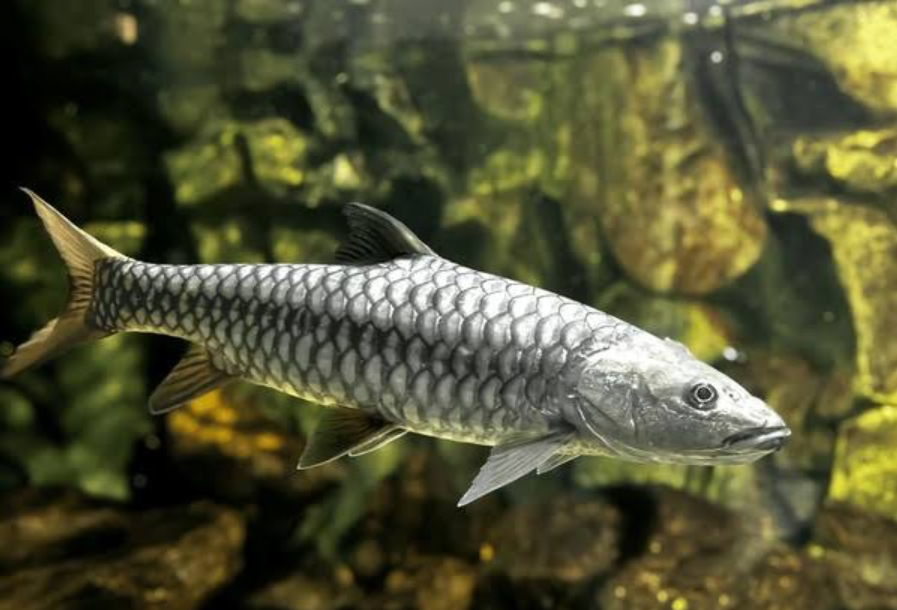
Copper Mahaseer 8"
Price: ₹1,000.00
Description: The Copper Mahaseer is a beautiful freshwater fish known for its striking copper hue and robustness. It is an excellent choice for a well-planted aquarium.
pH: Ideal pH range is 6.0 to 7.5.
Size: Currently available size is 8 inches (20 cm).
Golden Mahaseer 7"
Price: ₹1,200.00
Description: The Golden Mahaseer is admired for its golden color and is a robust freshwater fish that thrives in varying conditions. It is ideal for both novice and experienced aquarists.
pH: Ideal pH range is 6.5 to 7.5.
Size: Currently available size is 7 inches (18 cm).
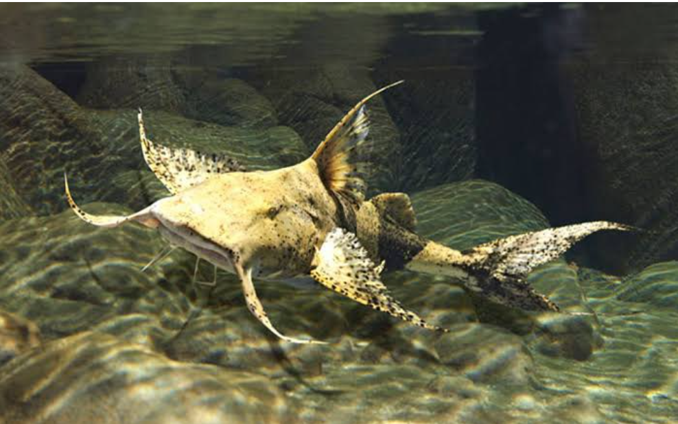
Goonch Catfish 10-12"
Price: ₹1,200.00
Description: The Goonch Catfish is a large and powerful freshwater fish known for its impressive size and unique appearance. It's best suited for spacious aquariums.
pH: Ideal pH range is 6.5 to 7.5.
Size: Currently available size varies from 10 to 12 inches (25-30 cm).
Golden Pearl Arowana 7-8"
Price: ₹2,800.00
Description: The Golden Pearl Arowana is highly prized for its pearlescent body and vibrant colors. This fish requires a spacious aquarium and is best kept with other peaceful species.
pH: Ideal pH range is 6.0 to 7.5.
Size: Currently available size is 7-8 inches (18-20 cm).
Channa Pseudomurulius 22-24" (Extremely Rare)
Price: ₹6,500.00
Description: The Channa Pseudomurulius, also known as the Emerald Dwarf Snakehead, is an extremely rare and highly sought-after freshwater fish. This unique species is known for its stunning coloration and elongated body. They require larger aquariums with ample space to swim and plenty of hiding spots. The Channa Pseudomurulius is known to be territorial, so be cautious when choosing tank mates. pH: Ideal pH range is 6.0 to 7.5. Size: Typically grows up to 22-24 inches (56-61 cm) as adults. Lifespan: Can live 10-15 years with proper care and maintenance.
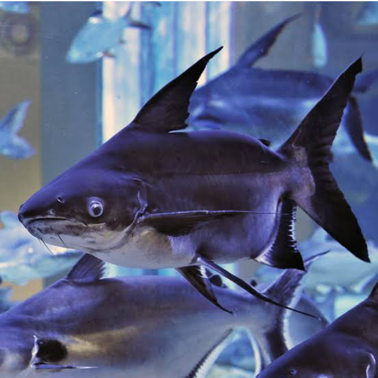
Paroon Shark 8"
Price: ₹1,000.00
Description: The Paroon Shark is an impressive freshwater fish known for its sleek body and unique shark-like appearance. This species prefers a spacious aquarium with plenty of swimming space, avoiding crowded environments. Lifespan: 15-20 years with proper care. Maximum Size: Can reach up to 36 inches (90 cm) in captivity. Ideal Temperature: 24-28°C (75-82°F). Country of Origin: Southeast Asia, found in rivers and lakes in countries like Thailand and Indonesia.
Bulleyes Snakehead 8"
Price: ₹500.00
Description: The Bulleyes Snakehead is a fascinating freshwater predator known for its striking pattern and adaptability. It requires a well-maintained tank and proper care to thrive.
pH: Ideal pH range is 6.0 to 7.5.
Size: Currently available size is 8 inches (20 cm).
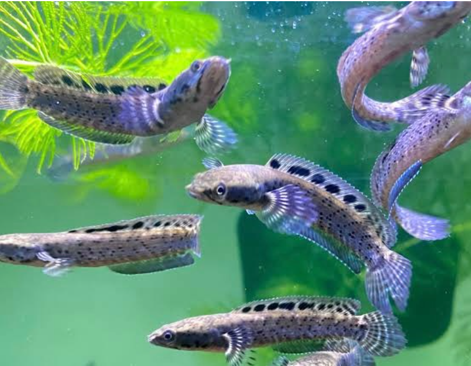
Ornatapinnis Yellow Lips 6-7"
Price: ₹2,200.00
Description: The Ornatapinnis Yellow Lips is a colorful and peaceful species that enhances the beauty of any aquarium. It thrives in a planted environment and is suitable for community tanks.
pH: Ideal pH range is 6.5 to 7.5.
Size: Currently available sizes are between 6 to 7 inches (15-18 cm).
Baramundi 7-8"
Price: ₹1,250.00
Description: Baramundi, known for its delicious taste, is a popular freshwater fish that grows quickly and adapts well to various aquarium conditions. Ideal for both beginners and experienced hobbyists.
pH: Ideal pH range is 6.5 to 7.5.
Size: Currently available sizes are between 7 to 8 inches (18-20 cm).
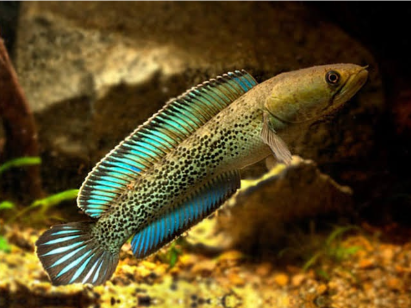
Channa Stewartii Kalikhola 7"
Price: ₹700.00
Description: Channa Stewartii Kalikhola is a vibrant and robust species that thrives in freshwater environments. This snakehead fish is known for its striking patterns and resilience.
pH: Ideal pH range is 6.0 to 8.0.
Size: Currently available size is 7 inches (18 cm).
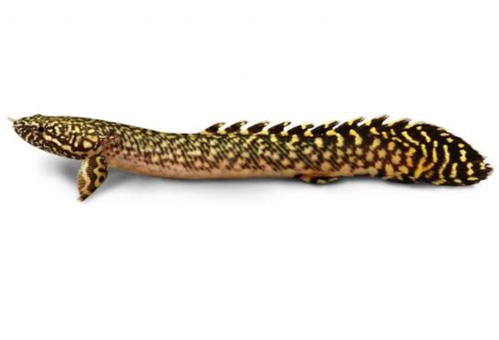
Ornate Bichir 4"
Price: ₹1,500.00
Description: The Ornate Bichir has an elongated, eel-like body with dorsal finlets resembling prehistoric creatures. This hardy, nocturnal fish is semi-aggressive and requires a good setup to thrive.
Lifespan: 10–15 years, but can live up to 20 years with excellent care.
Maximum Size: 12–18 inches (30–45 cm) in captivity.
Ideal Temperature: 24–28°C (75–82°F).
Country of Origin: West and Central Africa, commonly found in the Nile River and Chad Basin.
Channa Redmosaic 5"
Price: ₹1,500.00
Description: The Channa Redmosaic is an aggressive, predatory fish characterized by its elongated body, large mouth, and vibrant coloration. This species is known for its ability to breathe air.
Lifespan: 8–20 years.
Maximum Size: Varies by species: Small species (6–8 inches), Medium species (12–16 inches), Large species (3–4 feet).
Ideal Temperature: 22–30°C (72–86°F).
Country of Origin: Asia and Africa, including India, Thailand, Indonesia, and more.
Enlichery Senegal 4"
Price: ₹350.00
Description: The Senegal Bichir has an elongated, eel-like body with a series of dorsal finlets. It is a hardy, nocturnal fish, often considered a "Dinosaur Bichir" due to its ancient appearance.
Lifespan: 10–15 years, but can live up to 20 years with excellent care.
Maximum Size: 12–18 inches (30–45 cm) in captivity.
Ideal Temperature: 24–28°C (75–82°F).
Country of Origin: West and Central Africa, commonly found in the Nile River and other freshwater systems.
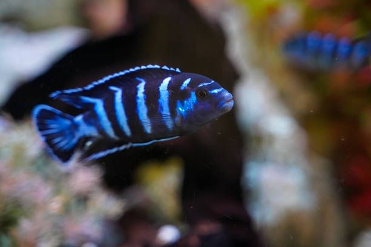
Demanson's Cichlid 3-4"
Price: ₹350.00
African Cichlids are colorful, territorial fish native to African lakes like Lake Malawi. They thrive in stable, well-maintained tanks with slightly alkaline, hard water. Lifespan: 8 to 15 years.
Redspotted Severum 7"
Price: ₹1,200.00
The Redspotted Severum is a vibrant freshwater cichlid known for its bright green body and distinct red spots. Lifespan: 10 to 15 years. Ideal pH: 6.5 to 7.5.
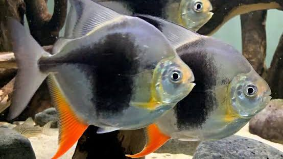
Black Berry Dollar 3-4"
Price: ₹850.00
A striking freshwater fish with deep black body and metallic, iridescent spots. Lifespan: 5 to 7 years. Ideal pH: 6.5 to 7.5.
Clown Loaches 4"
Price: ₹600.00
Known for their orange and black stripes, Clown Loaches are lively and social. Lifespan: Up to 12 years. Ideal pH: 6.0 to 7.5.
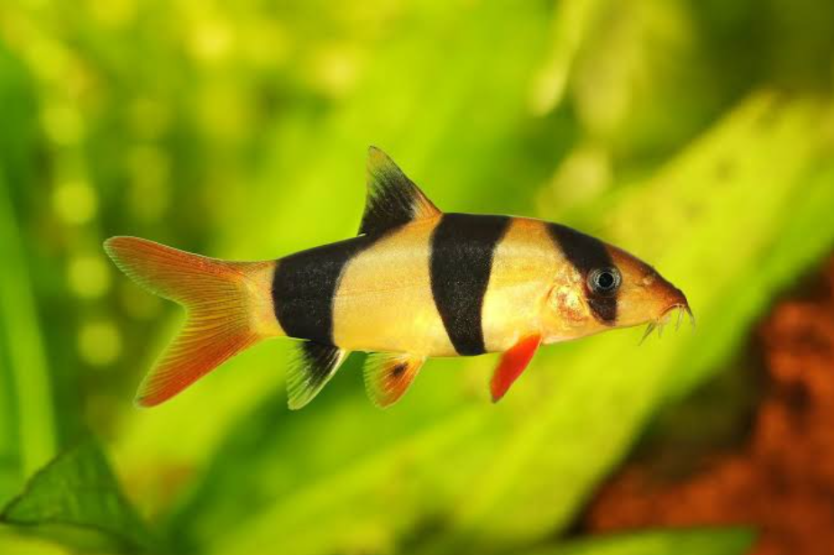
Clown Loaches 2-3"
Price: ₹300.00
Known for their orange and black stripes, Clown Loaches are lively and social. Lifespan: Up to 12 years. Ideal pH: 6.0 to 7.5.
Frontosa Burundi 2-3"
Price: ₹1,500.00
Known for its unique hump and striking appearance, the Frontosa Burundi thrives in large tanks. Lifespan: Up to 20 years. Ideal pH: 7.5 to 9.0.
Frontosa Burundi 2"
Price: ₹450.00
Known for its unique hump and striking appearance, the Frontosa Burundi thrives in large tanks. Lifespan: Up to 20 years. Ideal pH: 7.5 to 9.0.
Super Red Monkey Fries 2-3"
Price: ₹1,500.00
Description: The Super Red Monkey Fries is a captivating freshwater fish known for its vibrant red coloration and playful nature. Ideal for aquarists looking for a lively addition to their tank, these fish thrive in groups and require ample space and hiding spots. They are generally peaceful but can exhibit territorial behavior during breeding.
pH: Ideal pH range is 6.5 to 7.5, with slightly acidic to neutral water. Size: Can grow up to 5 inches (12.7 cm) in length as adults. Lifespan: Typically lives 3 to 5 years with proper care.
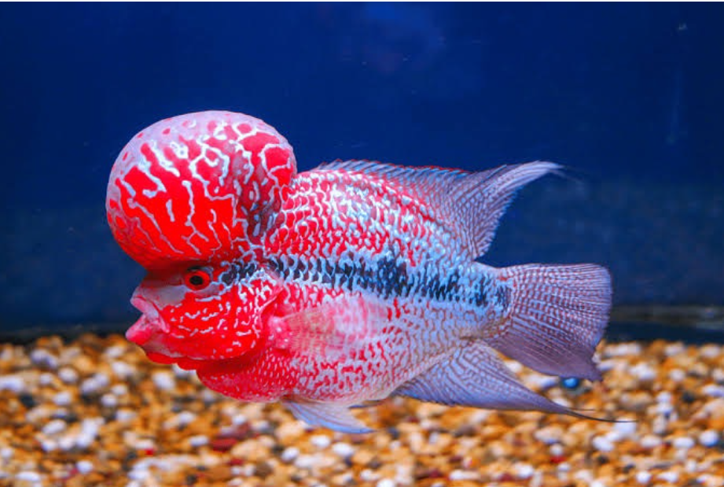
SRD Flowerhorn 4" AAA Grade Monster KOK
Price: ₹1,800.00
Description: The SRD Flowerhorn is an exquisite freshwater fish, celebrated for its vibrant coloration and distinctive head shape. This AAA Grade specimen features a prominent KOK, making it a showpiece in any aquarium. Known for its strong personality, the Flowerhorn thrives in a spacious environment with plenty of hiding spots. They are territorial and can be aggressive, especially during breeding.
pH: Ideal pH range is 6.0 to 7.5 for optimal health. Size: Can reach up to 12 inches (30 cm) as adults. Lifespan: Typically lives 10 to 12 years when cared for properly.
Menerambo 4"
Price: ₹1,200.00
Description: The Menerambo, also known as the Menerambo Cichlid, is a vibrant freshwater fish favored for its striking appearance and lively behavior. Typically found in rivers and lakes, they enjoy spacious tanks with plenty of decorations and hiding spots. Menerambos are known for their social nature and can be kept in groups, but care should be taken to monitor aggression levels, especially during breeding.
pH: Ideal pH range is 6.5 to 7.5. Size: Can grow up to 6 inches (15 cm) as adults. Lifespan: Typically lives 5 to 8 years with proper care.
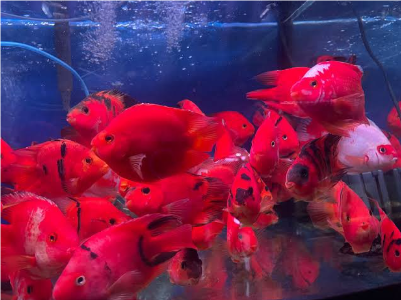
Red Tiger 6"
Price: ₹1,800.00
Description: The Red Tiger is a striking freshwater fish renowned for its vibrant coloration and active nature. With a penchant for spacious environments, it thrives in well-maintained tanks with ample swimming space and hiding spots. Typically social, Red Tigers can be kept with other compatible species; however, be mindful of their territorial tendencies during breeding seasons.
pH: Ideal pH range is 6.0 to 7.5. Size: Can grow up to 8 inches (20 cm) as adults. Lifespan: Generally lives 5 to 7 years with proper care.
Yellow Yuan Bao Parrot 5"
Price: ₹1,650.00
Description: The Yellow Yuan Bao Parrot is a beloved freshwater fish, known for its unique shape and vibrant yellow coloration. These fish are characterized by their round bodies and beak-like mouths, resembling a parrot. They thrive in well-planted tanks with ample space to swim. Although generally peaceful, they can exhibit territorial behavior, so it's best to house them in a spacious aquarium.
pH: Ideal pH range is 6.5 to 7.5. Size: Typically grow up to 6 inches (15 cm) in length as adults. Lifespan: Can live 8 to 10 years with proper care and maintenance.
Venus Cichlid 5"
Price: ₹250.00
Description: The Venus Cichlid is a beautiful freshwater fish known for its vibrant colors and unique patterns. They thrive in well-maintained aquariums with plenty of hiding spots and territories.
Lifespan: 6-10 years, depending on conditions. Maximum Size: Varies by species, but can reach up to 5 inches (13 cm). Ideal Temperature: 24-28°C (75-82°F). Country of Origin: Primarily found in African lakes.
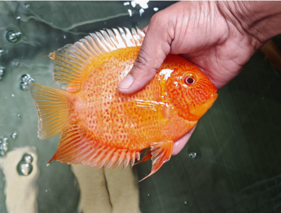
Severum Cichlid 7"
Price: ₹1,200.00
Description: The Severum is a South American cichlid known for its laterally compressed, oval-shaped body and vibrant colors. They come in various color morphs, including green, gold, and red. They are relatively peaceful compared to other cichlids but can be territorial, especially during breeding. Lifespan: 10–15 years with proper care. Maximum Size: 8–10 inches (20–25 cm) in captivity. Ideal Temperature: 24–28°C (75–82°F). Country of Origin: South America, primarily found in the Amazon River basin in Brazil, Venezuela, and surrounding regions.
Frog Mouth Catfish 4-7"
Price: ₹350.00
Description: The Frog Mouth Catfish, known for its unique appearance resembling a frog's mouth, is a peaceful bottom dweller that adds interest to community aquariums.
pH: Ideal pH range is 6.5 to 7.5.
Size: Currently available size varies from 4 to 7 inches (10-18 cm).
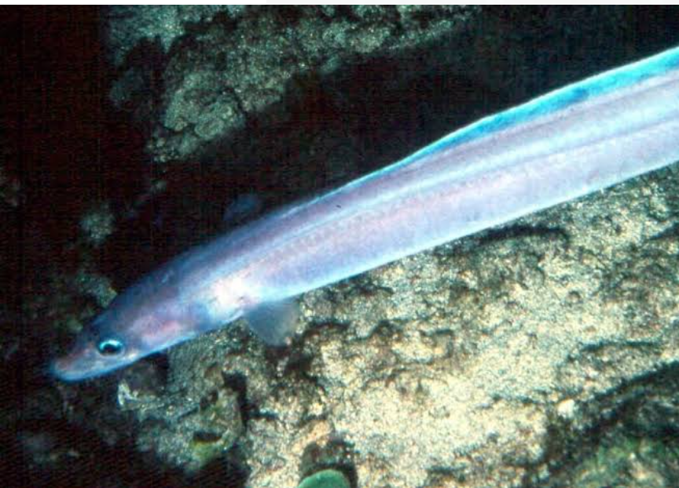
Hi-Fin Conger Eels 12-14"
Price: ₹1,500.00
Description: Hi-Fin Conger Eels are known for their elongated bodies and graceful movements. They make interesting pets for aquarists who understand their specific habitat requirements.
pH: Ideal pH range is 7.0 to 8.5.
Size: Currently available sizes are between 12 to 14 inches (30-35 cm).
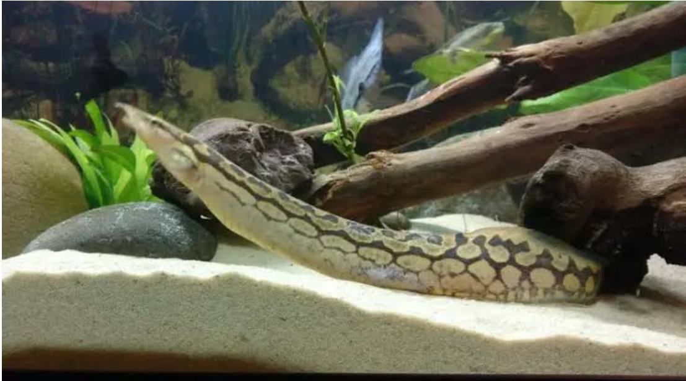
Tye Track Eel 10"
Price: ₹800.00
Description: The Tye Track Eel is a fascinating species, known for its striking coloration and patterns. It thrives in a well-maintained aquarium with plenty of hiding spots.
pH: Ideal pH range is 6.5 to 7.5.
Size: Currently available size is 10 inches (25 cm).
Imported Red Head Tapajos 4"
Price: ₹600.00
Description: The Imported Red Head Tapajos is a stunning cichlid known for its vibrant red coloration and unique patterns. This fish is suitable for aquarists looking to add some color to their tanks.
pH: Ideal pH range is 6.5 to 7.5.
Size: Currently available size is 4 inches (10 cm).
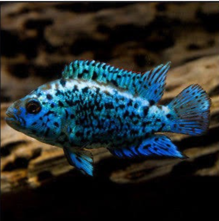
Electric Blue Jack Dempsey 2"
Price: ₹450.00
Description: The Electric Blue Jack Dempsey is a smaller variety of the popular cichlid, known for its striking electric blue coloration and bold personality. A great addition for any freshwater tank.
pH: Ideal pH range is 6.5 to 7.5.
Size: Currently available size is 2 inches (5 cm).
Milky White Veiltail Koi 10"
Price: ₹1,200.00
The Milky White Koi Carp is a stunning, pure white koi with a glossy sheen and smooth, symmetrical fins. It grows up to 24-36 inches (60-90 cm) and can weigh up to 20 pounds (9 kg), with a lifespan of 20-30 years (or 40+ with excellent care). It thrives in water temperatures of 15-25°C, pH levels of 7.0-8.0, and requires a spacious, well-oxygenated pond at least 3 feet deep. Feed it a balanced diet of high-quality pellets, vegetables, and occasional protein treats for optimal growth and health.
Matsubha 7"
Price: ₹800.00
The Matsubha is a stunning koi variety that boasts a pure white color and a glossy sheen. Its fins are smooth and symmetrical, adding to its beauty. This impressive fish can grow up to 24-36 inches in length and weigh up to 20 pounds. With proper care, the Matsubha can live for 20-30 years or even 40+ years. To thrive, the Matsubha requires water temperatures between 15-25°C and pH levels of 7.0-8.0. It needs a spacious, well-oxygenated pond with a minimum depth of 3 feet. A balanced diet of high-quality pellets, vegetables, and occasional protein treats is essential for the Matsubha's optimal growth and health.
Hariwake 10"
Price: ₹1,600.00
The Hariwake is a stunning koi variety with a pure white coloration and glossy sheen. Its smooth, symmetrical fins add to its beauty. This koi grows up to 24-36 inches (60-90 cm) in length and can weigh up to 20 pounds (9 kg). With proper care, it can live for 20-30 years, or even 40+ years in ideal conditions. To thrive, the Hariwake requires water temperatures between 15-25°C and pH levels of 7.0-8.0. It needs a spacious, well-oxygenated pond with a minimum depth of 3 feet. A balanced diet of high-quality pellets, vegetables, and occasional protein treats is essential for its optimal growth and health.
Utusuri and Sanke 10"
Price: ₹1,800.00
Description: The Utusuri and Sanke Koi are highly desirable for their intricate patterns and vibrant colors. Known for their beauty and grace, these koi make stunning additions to any pond or aquarium. They thrive in well-maintained water conditions and enjoy a diet rich in high-quality koi pellets.
pH: Ideal pH range is 6.5 to 7.5. Size: Can grow over 12 inches (30 cm) at maturity. Lifespan: Can live up to 20 years or more with proper care.
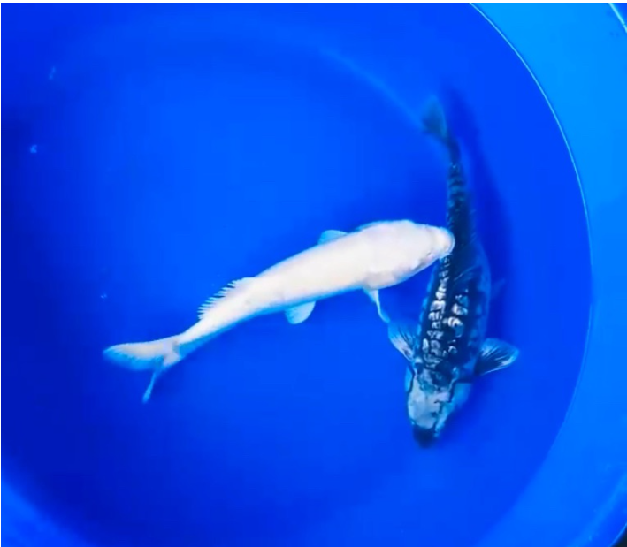
White Ogon and Ghost Koi 10"
Price: ₹2,200.00
Description: The White Ogon and Ghost Koi are distinguished by their stunning white bodies and unique markings. They are calm and peaceful fish that are best kept in larger ponds. These koi bring elegance and serenity to any aquatic environment.
pH: Ideal pH range is 6.5 to 7.5. Size: Can grow to about 12 inches (30 cm) when fully grown. Lifespan: Typically lives 15 to 20 years with appropriate care.
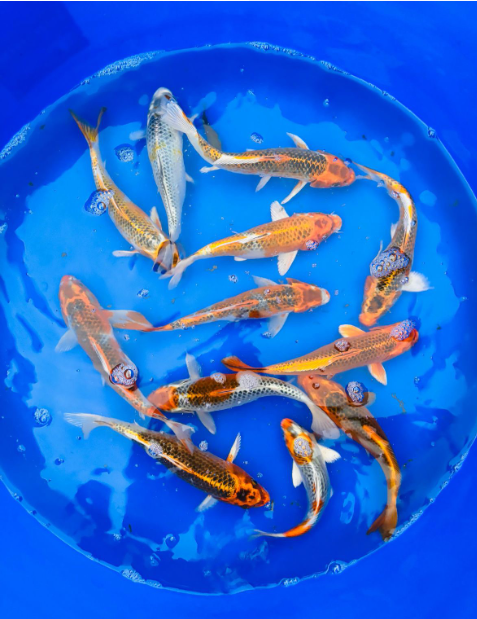
Metallic Koi 7-8"
Price: ₹1,200.00
Description: The Metallic Koi are admired for their beautiful shimmering scales and vivid colors. They are hardy fish that thrive in a variety of conditions and are well-suited for both koi ponds and aquariums. These koi love to explore their environment and are often quite social.
pH: Ideal pH range is 6.5 to 7.5. Size: Generally grow to about 12-14 inches (30-35 cm) at full maturity. Lifespan: Can live up to 20 years or longer with proper care.
Yellow Ogon 8-10"
Price: ₹1,600.00
Description: The Yellow Ogon Koi is cherished for its stunning yellow coloration, which brightens any pond or aquarium. These fish are relatively easy to care for and adapt well to a variety of water conditions. They thrive in a well-maintained environment with stable water conditions.
pH: Ideal pH range is 6.5 to 7.5. Size: Can reach lengths of 12-14 inches (30-35 cm) at maturity. Lifespan: Generally lives for 15-20 years with proper care.
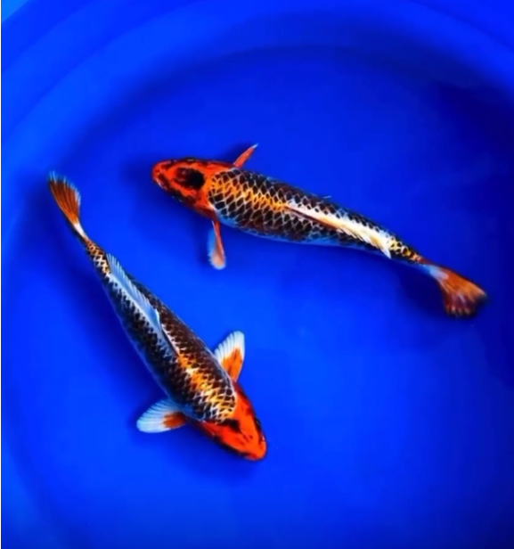
Metallic Koi 8"
Price: ₹1,500.00
Description: The 8-inch Metallic Koi are known for their vibrant colors and metallic sheen. They are easy to manage and thrive in various aquatic environments. These koi are perfect for both beginners and experienced hobbyists.
pH: Ideal pH range is 6.5 to 7.5. Size: Typically grow to about 12-14 inches (30-35 cm) at maturity. Lifespan: Can live up to 20 years with proper care.
Goromo Koi 10-12"
Price: ₹2,000.00
Description: The Goromo Koi is a stunning variety known for its striking colors and patterns. These fish are graceful swimmers and make a wonderful addition to any pond community. They require a well-maintained environment with stable water conditions.
pH: Ideal pH range is 6.5 to 7.5. Size: Typically grows to about 12-14 inches (30-35 cm) when fully mature. Lifespan: Generally lives for 15-20 years with good care.
Orange Sushi 8-10"
Price: ₹1,800.00
Description: The Orange Sushi Koi is celebrated for its vibrant orange hue and unique coloration. These koi are peaceful and social, often seen swimming together in groups. They thrive in clean, well-oxygenated water.
pH: Ideal pH range is 6.5 to 7.5. Size: Typically grows to about 12 inches (30 cm) when fully matured. Lifespan: Can live for 15-20 years in a well-maintained environment.
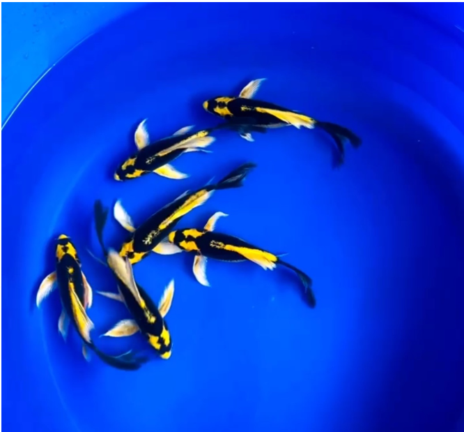
Kobuto Veiltail Koi 8-10"
Price: ₹1,500.00
Description: The Kobuto Veiltail Koi is known for its elegant flowing fins and vibrant colors. They are gentle swimmers and typically do well in a community setting. Well-suited for larger ponds and aquariums, these fish thrive in stable water conditions.
pH: Ideal pH range is 6.5 to 7.5. Size: Generally reaches lengths of 10-12 inches (25-30 cm) as adults. Lifespan: Lives for approximately 15 to 20 years with proper care.
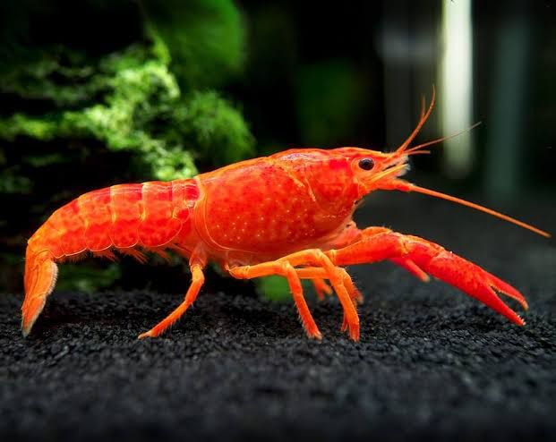
Adult Cray Fish (Red) 5-6"
Price: ₹800.00
The Crayfish is a freshwater crustacean with a lobster-like appearance, featuring a hard exoskeleton, two large claws, and a segmented body. It typically grows 3-6 inches (7-15 cm), though some species can reach 9 inches (23 cm), and has a lifespan of 2-5 years in captivity. Crayfish thrive in water temperatures of 18-25°C, pH levels of 6.5-8.0, and need a tank with hiding spots, clean water, and a secure lid (as they can climb). They are omnivores, feeding on algae, plants, pellets, and occasional protein sources like shrimp or fish.
Cray Fish (Blue) 3-4"
Price: ₹350.00
The Crayfish is a freshwater crustacean with a lobster-like appearance, featuring a hard exoskeleton, two large claws, and a segmented body. It typically grows 3-6 inches (7-15 cm), though some species can reach 9 inches (23 cm), and has a lifespan of 2-5 years in captivity. Crayfish thrive in water temperatures of 18-25°C, pH levels of 6.5-8.0, and need a tank with hiding spots, clean water, and a secure lid (as they can climb). They are omnivores, feeding on algae, plants, pellets, and occasional protein sources like shrimp or fish.
Cray Fish (White) 3-4"
Price: ₹350.00
The Crayfish is a freshwater crustacean with a lobster-like appearance, featuring a hard exoskeleton, two large claws, and a segmented body. It typically grows 3-6 inches (7-15 cm), though some species can reach 9 inches (23 cm), and has a lifespan of 2-5 years in captivity. Crayfish thrive in water temperatures of 18-25°C, pH levels of 6.5-8.0, and need a tank with hiding spots, clean water, and a secure lid (as they can climb). They are omnivores, feeding on algae, plants, pellets, and occasional protein sources like shrimp or fish.
Cray Fish (Orange) 3-4"
Price: ₹350.00
The Crayfish is a freshwater crustacean with a lobster-like appearance, featuring a hard exoskeleton, two large claws, and a segmented body. It typically grows 3-6 inches (7-15 cm), though some species can reach 9 inches (23 cm), and has a lifespan of 2-5 years in captivity. Crayfish thrive in water temperatures of 18-25°C, pH levels of 6.5-8.0, and need a tank with hiding spots, clean water, and a secure lid (as they can climb). They are omnivores, feeding on algae, plants, pellets, and occasional protein sources like shrimp or fish.
Cray Fish (Red and White) 3-4"
Price: ₹350.00
The Crayfish is a freshwater crustacean with a lobster-like appearance, featuring a hard exoskeleton, two large claws, and a segmented body. It typically grows 3-6 inches (7-15 cm), though some species can reach 9 inches (23 cm), and has a lifespan of 2-5 years in captivity. Crayfish thrive in water temperatures of 18-25°C, pH levels of 6.5-8.0, and need a tank with hiding spots, clean water, and a secure lid (as they can climb). They are omnivores, feeding on algae, plants, pellets, and occasional protein sources like shrimp or fish.